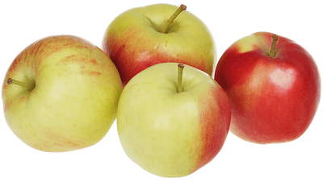

Яблоки Гала
Эти румяные желто-красные полосатые яблочки среднего размера — еще один плод зарубежной селекции, хорошо прижившийся и в наших широтах. Получился он путем скрещивания одной из разновидностей яблок Голден и другого сладкого сорта Киддс Оранж Ред. Яблоки созревают к концу сентября, а вот храниться могут до февраля, оставаясь плотными и сочными. Вкус сладкий, но освежающий, с легкой кислинкой и пряными анисовыми нотками. Эти яблоки долго не темнеют в разрезе, поэтому их любят добавлять в салаты.
| Цвет плодов: | зеленовато-желтая с красными полосками |
| Высота дерева: | до 4 м |
| Вес плодов: | 140-170 гр |
| Вкус (сладкий, кислый и тд): | сладкий |
| Время созревания : | октябрь |
| Срок созревания | осенний |
| Срок хранения | до февраля |